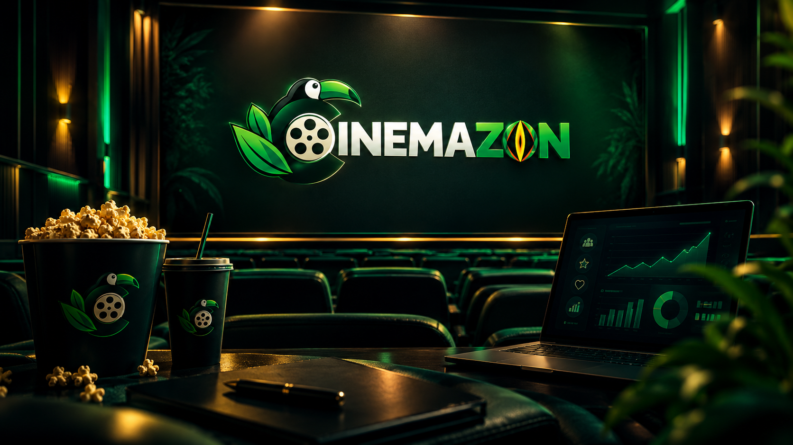
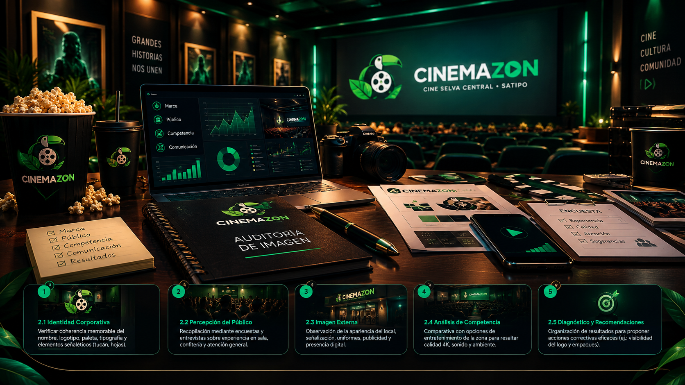
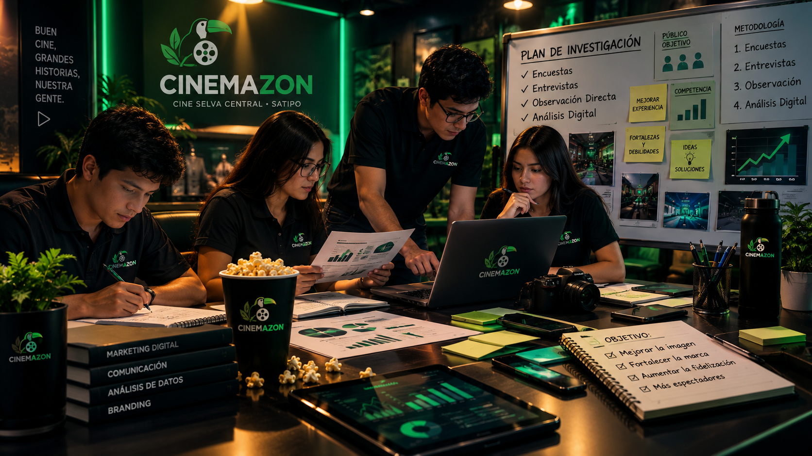
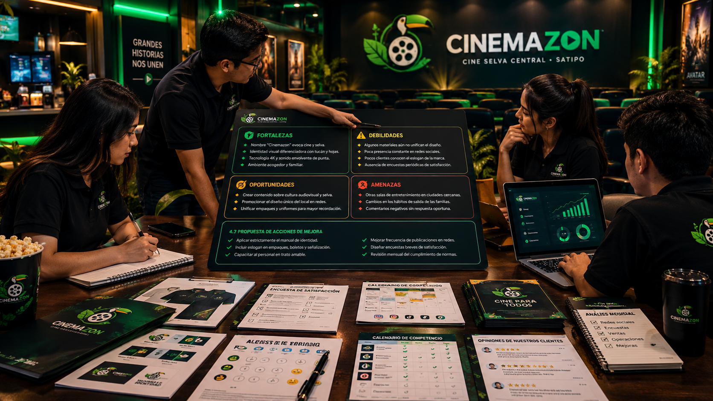

Necesidad de la Investigación
La investigación sobre la imagen de Cinemazon es necesaria para conocer cómo perciben los clientes la marca, su identidad visual, la calidad de sus proyecciones, el servicio de confitería y la atención que reciben[cite: 7]. Permite identificar fortalezas, debilidades y determinar si se transmiten valores de modernidad, calidad, cercanía y orgullo regional.
1.1 Objetivo General
Evaluar la imagen corporativa de Cinemazon para identificar oportunidades de mejora que permitan fortalecer su identidad, mejorar la percepción de los clientes y consolidar su posicionamiento como el cine de la Selva Central.
1.2 Objetivos Específicos
- Analizar elementos visuales (logotipo, colores, tipografía).
- Conocer la opinión de los clientes sobre instalaciones y proyección.
- Evaluar canales digitales, web y publicidad.
- Identificar fortalezas, debilidades y diferenciadores.

Proceso de Auditoría de la Imagen
Examen sistemático de los elementos internos y externos que influyen en la percepción del público a través de 5 etapas clave:
Verificar coherencia memorable del nombre, logotipo, paleta, tipografía y elementos selváticos (tucán, hojas).
Recopilación mediante encuestas y entrevistas sobre experiencia en sala, confitería y atención general.
Observación de la apariencia del local, señalización, uniformes, publicidad y presencia digital.
Comparativa con opciones de entretenimiento de la zona para resaltar calidad 4K, sonido y ambiente.
Organización de resultados para proponer acciones correctivas eficaces (ej. visibilidad del logo y empaques).

Desarrollo del Plan de Investigación
3.1 y 3.2 Metodología Mixta
Combina datos cuantitativos y cualitativos mediante herramientas de campo:
| Método | Propósito | Ejemplo de Aplicación |
|---|---|---|
| Encuestas | Medir satisfacción y reconocimiento | "Del 1 al 5, ¿cómo calificaría la imagen visual de Cinemazon?" |
| Entrevistas | Conocer opiniones y sugerencias | "¿Qué cambiaría para mejorar su experiencia en Cinemazon?" |
| Observación Directa | Evaluar instalaciones, señalización y atención | Verificar visibilidad del logotipo y uso de uniformes completos. |
| Análisis Digital | Revisar redes, contenido y frecuencia gráfica | Comprobar paleta cromática verde-rojo-amarillo en publicaciones. |
Clientes actuales y potenciales de Satipo y alrededores. Propuesta académica: encuesta a 30 clientes al azar.
Semana 1: Planificación | Semana 2: Aplicación | Semana 3: Análisis | Semana 4: Informe final.

Proceso de Autoanálisis de la Imagen
Evaluación crítica interna enfocada en la propia marca, recursos y formas de comunicación antes de contrastarla con el mercado externo.
Fortalezas
- Nombre "Cinemazon" evoca cine y selva.
- Identidad visual diferenciadora con tucán y hojas.
- Tecnología 4K y sonido envolvente de punta.
- Ambiente acogedor y familiar.
Debilidades
- Algunos materiales aún no unifican el diseño.
- Poca presencia constante en redes sociales.
- Pocos clientes conocen el eslogan de la marca.
- Ausencia de encuestas periódicas de satisfacción.
Oportunidades
- Crear contenido sobre cultura audiovisual y selva.
- Promocionar el diseño único del local en redes.
- Unificar empaques y uniformes para mayor recordación.
Amenazas
- Otras salas de entretenimiento en ciudades cercanas.
- Cambios en los hábitos de salida de las familias.
- Comentarios negativos sin respuesta oportuna.
4.7 Propuesta de Acciones de Mejora

Conclusiones
La auditoría de imagen de Cinemazon permitirá comprender cómo se presenta la marca y qué aspectos influyen en la percepción de sus clientes. Mediante el análisis de la identidad visual, la comunicación, la atención y el entorno competitivo, se identificarán acciones concretas para fortalecer la imagen corporativa.
Las recomendaciones se basarán en resultados objetivos y no en suposiciones, garantizando que CINEMAZON consolide una imagen reconocible, diferenciada y querida por las familias de la Selva Central, cumpliendo su visión de ser el cine líder de la región.